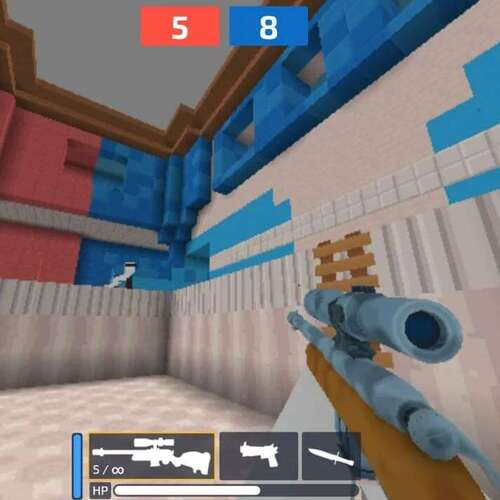
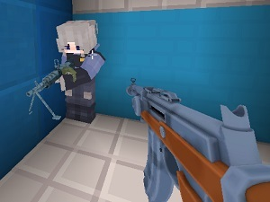
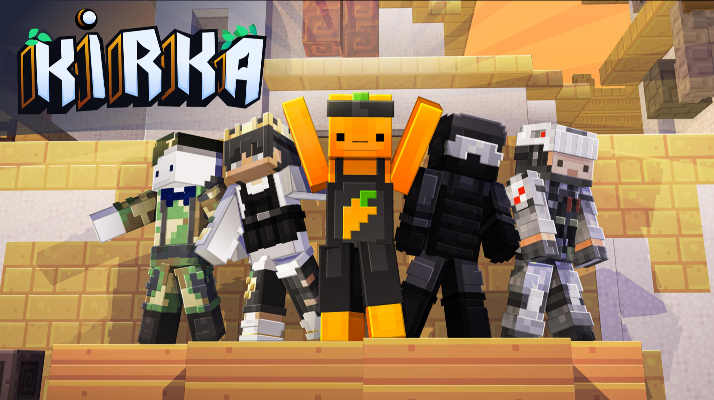

Kirka.io is the voxel FPS that Minecraft players have been waiting for. Released in April 2021, it combines blocky charm with legitimate first-person shooter mechanics — wall climbing, dashing, headshot multipliers, and fast time-to-kill. No downloads, no pay-to-win, just pure skill-based combat in a colorful block world.
What sets it apart from other browser shooters is the movement system. You can climb walls by sprint-jumping into them, dash with the E key to dodge bullets, and chain jumps to maintain momentum. Parkour mode exists as its own thing — no shooting, just pure platforming. It's surprisingly addictive.
Game Overview
Kirka.io drops you into fast-paced multiplayer matches across voxel-style maps. The graphics are intentionally blocky — think Minecraft meets Counter-Strike. This isn't a weakness; the clean visual style makes enemies easy to spot, which keeps the gameplay competitive and fair.
The game runs entirely in your browser with no downloads or sign-ups. It works on Chromebooks, school computers, and low-end PCs. You pick a character, load your weapons, choose a mode, and you're in a match within seconds. Progression comes through XP and gold — earn them by playing, spend them on weapon skins and chests. No paid shortcuts.
| Feature | Details |
|---|---|
| Game Type | First-Person Shooter (Voxel/Pixel Art) |
| Platform | Web Browser (Desktop, Chromebook, Tablet, Mobile) |
| Game Modes | Point, Solo, Team, Parkour, CTF |
| Players | Multiplayer (real-time) |
| Price | Free (no download, no account required) |
| Released | April 2021 |
Controls
Standard FPS controls with a few extras — the E key for dash and wall climbing are what make Kirka.io feel different from other browser shooters. Master those first.
| Key | Action |
|---|---|
| WASD | Move |
| Space | Jump |
| Shift | Crouch |
| E | Dash (quick burst of speed) |
| Mouse | Aim |
| Left Click | Shoot |
| Right Click | Aim Down Sights (ADS) |
| R | Reload |
| 1 / 2 / 3 | Switch weapon slots |
| P / Esc | Open weapon selection menu |
On mobile, the game offers touch controls with a virtual joystick and on-screen buttons. It works for casual sessions, but keyboard and mouse gives you a serious accuracy advantage — especially for headshots and wall-climbing precision.
Game Modes

Point (Capture the Flag)
Teams of four compete to collect points from the green flag. Your team's total score is the sum of all members' points. The team with the highest combined score wins. Communication is key here — split roles between flag carriers and defenders.
Solo (Free-for-All)
Every player for themselves. The top three scorers at the end of the round win. This is where you practice raw aim and positioning. No teammates to rely on — just you and your reflexes.
Team (Team Deathmatch)
Two teams of four. Eliminate enemies to rack up team kills. The team with the most total kills wins. Simple objective, but winning requires coordination — focus fire, cover teammates, and control map positions together.
Parkour
No combat. Navigate obstacle courses as fast as possible, reaching the flag at the end. This mode tests your movement skills — wall climbing, dashing, and jump chaining. It's a great warm-up before competitive matches, and the leaderboards get surprisingly competitive.
Weapons Guide
Kirka.io has a diverse arsenal. Weapons are categorized by type — melee, pistol, SMG, shotgun, assault rifle, LMG, and sniper. Each has distinct stats for damage, fire rate, magazine size, reload time, and movement speed while equipped.

| Weapon | Type | Damage (Body/Head) | Mag | Reload | Move Speed |
|---|---|---|---|---|---|
| Bayonet | Melee | 50 / 90 (1-hit head kill) | — | 0s | 5.94 blocks/s |
| Shark | Pistol | 16 / 18 | 10 | 1.0s | 5.4 blocks/s |
| MAC-10 | SMG | 11 / 15 | 30 | 1.5s | 5.28 blocks/s |
| Weatie | Shotgun | High (easy headshots) | 7 | 1.0s | 4.8 blocks/s |
| M60 | LMG | 18 / 20 | 60 | 2.5s | 4.5 blocks/s |
| LAR | Assault Rifle | 20 / 24 | 25 | 1.5s | 4.98 blocks/s |
| SCAR | Assault Rifle | 17 / 22 | 25 | 1.5s | 5.10 blocks/s |
| AR-9 | Assault Rifle | 14 / 17 | 30 | 1.5s | 5.28 blocks/s |
| VITA | Sniper | 60 / 120 (1-hit head kill) | 5 | 1.7s | 4.8 blocks/s |
| Revolver | Pistol | High (1-hit kill) | 6 | — | — |
Beginner recommendation: Start with the LAR (assault rifle) — balanced damage, decent fire rate, and effective at most ranges. Once you're comfortable, try the VITA for long-range headshots or the MAC-10 for aggressive close-quarters pushes.
Unlock tip: The SCAR unlocks at level 20. It's worth the grind — solid damage with a good fire rate makes it competitive with the LAR at every range.
Tips & Strategies
Sprint-jump into any wall and you'll start climbing. This is the single most important movement technique in Kirka.io. It lets you reach high ground instantly, flank enemies from unexpected angles, and escape bad fights by going vertical. Most new players don't realize this exists — use it early and you'll have a massive edge. Practice chaining wall climbs with dashes to move across maps faster than anyone else.
The VITA sniper deals 120 damage to the head — that's a one-shot kill regardless of armor. Even the Bayonet one-shots with a head hit. The damage multiplier applies across all weapons, so training your aim to head height pays off enormously. In Solo mode especially, landing headshots consistently is what separates top-scoring players from the rest of the pack.
The E key gives you a quick burst of speed in your movement direction. Use it to close distance on enemies before they can react, or to dodge return fire after taking a shot. In close-quarters fights with the Weatie shotgun or MAC-10, dash in → shoot → dash out is a devastating hit-and-run pattern. Don't waste it running in straight lines — use it directionally when it matters.
You have three weapon slots for a reason. Running around with the M60 in tight corridors is suicide — the slow movement speed (4.5 blocks/s) and long reload (2.5s) will get you killed. Switch to the MAC-10 or Weatie for close fights, and pull out the VITA or LAR when you have distance. The players who weapon-swap fluidly win more duels than the ones who just run one loadout.
Before jumping into competitive Team or Point matches, spend 5-10 minutes in Parkour mode. It forces you to practice wall climbing, dash timing, and jump chaining without the pressure of combat. You'll build muscle memory for movement mechanics that transfer directly to fights. Think of it like aiming practice, but for your movement.
In Point mode, your team score is the sum of all members' points from the flag. If everyone's chasing kills instead of capturing, you'll lose even with a positive K/D. Communicate with your team, assign roles (who grabs the flag, who defends), and focus on the objective. In Team mode, coordinate focus fire — two players shooting the same target simultaneously wins almost every engagement.
Don't just play matches blindly — check your daily quests. They give bonus gold on top of match earnings, and completing them consistently is the fastest way to unlock chests with rare weapon skins and character cosmetics. The leaderboard rewards also give chests, so pushing for high scores in Solo mode pays double.

FAQ
Yes, 100% free. No downloads, no sign-ups, no pay-to-win mechanics. Everything is earned through gameplay. Open kirka.io in your browser and start playing immediately.
The LAR (assault rifle) is the best starting weapon. It has balanced damage (20 body / 24 head), a reasonable 25-round magazine, and works well at most engagement distances. Once you're comfortable, branch out to the VITA sniper for precision or MAC-10 for aggressive play.
Yes! Sprint-jump into any wall and your character will start climbing. This is one of the game's signature movement mechanics. Combine wall climbing with dashes to reach positions enemies don't expect and control high ground easily.
Yes, the game supports touch controls on mobile browsers. There's also an Android APK version available. However, keyboard and mouse gives a significant advantage for precision aiming and movement mechanics like wall climbing.
Most weapons are available from the start. Some, like the SCAR, unlock at specific levels (level 20). You can also earn gold through matches and daily quests to buy chests that contain additional weapons and skins. Play consistently to level up and expand your arsenal.
Kirka.io proves that browser shooters don't need flashy graphics to deliver competitive gameplay. The voxel art style keeps things readable, the movement system adds depth that most .io games lack, and the weapon variety gives you real strategic choices every match. Master wall climbing, keep your crosshair at head height, and don't sleep on Parkour mode — it's the best warm-up tool in the game.
Ready to climb some walls? Head to kirka.io and drop into your first match.
Play Kirka.io NowLast updated: June 20, 2026
Written by the iogameguide.com team